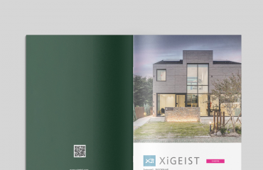

인쇄 사고의 대부분은 인쇄소가 아니라 데이터 단계에서 시작됩니다. 모니터에서는 멀쩡했는데 인쇄물이 이상하게 나왔다면, 십중팔구 데이터 문제입니다.
기본 체크리스트는 이렇습니다. ① 색상 모드가 RGB가 아닌 CMYK인지 ② 재단 여백(도련)이 사방 3mm 이상 잡혀 있는지 ③ 중요한 글자와 요소가 재단선에서 3mm 이상 안쪽에 있는지 ④ 서체가 아웃라인(윤곽선) 처리되어 있는지 ⑤ 이미지 해상도가 300dpi 이상인지.
검정 표현도 주의가 필요합니다. 본문 텍스트는 K100 단색 검정으로, 넓은 배경 검정은 리치블랙으로 — 반대로 쓰면 글자가 번지거나 배경이 회색처럼 연하게 나옵니다.
하오커뮤니케이션에서 제작하는 모든 인쇄물은 출고 전 자체 검수 과정을 거치므로 이런 걱정 없이 맡기시면 됩니다. 다만 직접 데이터를 넘기실 때는 위 다섯 가지만 확인해도 사고의 90%는 막을 수 있습니다.